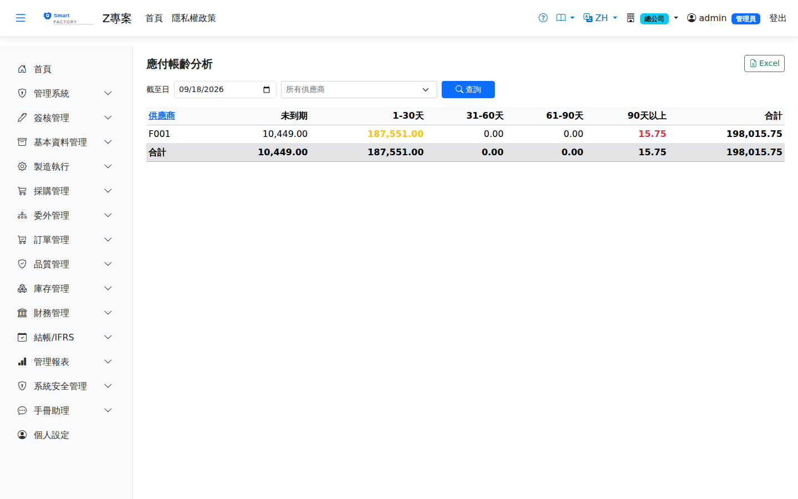

應付帳齡分析AP Aging
以指定基準日（asOf）將未結清應付發票餘額分桶（0-30/31-60/61-90/90+），合計與應付總額勾稽，供資金調度與付款排程。Buckets the balances of open AP invoices as at a chosen date (asOf) into 0-30 / 31-60 / 61-90 / 90+, reconciled with total payables, for cash management and payment scheduling.

查詢Search
欄位說明Field reference
查詢條件Query criteria
| 條件Condition | 說明Guide |
|---|---|
| 截至日As of | 必填Required 帳齡的計算基準日；逾期天數＝截至日 － 發票到期日The as-of date the aging is calculated from; days overdue = as-of date − invoice due date |
| 供應商Supplier | 只看單一供應商；留空為全部供應商彙總One supplier only; leave blank to summarise all suppliers |
報表欄位Report fields
| 欄位Field | 說明Guide |
|---|---|
| 供應商Supplier | 應付帳款的往來對象The counterparty of the payable |
| 未到期Current | 到期日尚未屆至的未結清應付金額Open payables not yet due |
| 1-30天1-30 Days | 逾期 1～30 天的未結清應付金額Open payables 1–30 days overdue |
| 31-60天31-60 Days | 逾期 31～60 天的未結清應付金額Open payables 31–60 days overdue |
| 61-90天61-90 Days | 逾期 61～90 天的未結清應付金額Open payables 61–90 days overdue |
| 90天以上Over 90 Days | 逾期超過 90 天的未結清應付金額，是催付與帳務風險的重點Open payables more than 90 days overdue — the ones to chase and the main accounting risk |
| 合計Total | 該供應商各帳齡區間的未結清金額總和Total outstanding for the supplier across the aging bands |
帳齡以「截至日 － 發票到期日」計算，未到期者列入「未到期」欄；各帳齡欄位為該區間內未結清金額＝總額 − 已收付 − 已折讓（已核銷、已折讓部分不計）。付清後才開折讓而我們多付的發票以負數列入，供應商合計因此減少。Aging is calculated as the as-of date minus the invoice due date, and anything not yet due goes in the "not due" column; each aging column holds the outstanding amount in that band, which is total − settled − credited (amounts already allocated or credited are excluded). An invoice we overpaid because a debit note was issued after it was paid appears as a negative amount and reduces the supplier total.